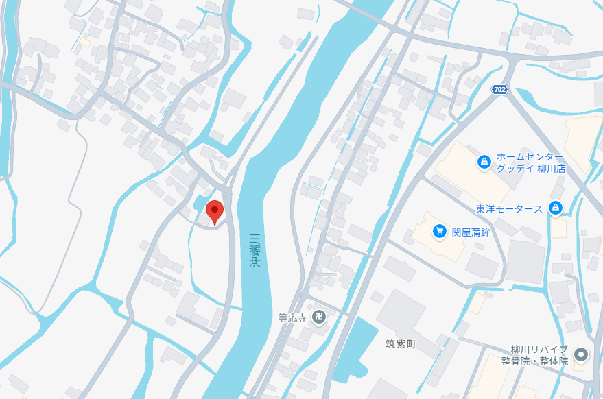

ご相談を大切に
一人ひとりの悩みや気持ちに耳を傾け、安心してお話しいただける時間を大切にしています。
和のつくり泉
wanotsukuri izumi
Spirit & body
迷いや不安、身体の疲れや心のつかえがあるとき、 静かで落ち着いた空間でご相談いただけるお店です。
占い・鑑定とマッサージを通して、気持ちを整え、心身のバランスを取り戻すお手伝いをいたします。 ひとときの休息を、安心してお過ごしいただけるように丁寧におもてなしします。
一人ひとりの悩みや気持ちに耳を傾け、安心してお話しいただける時間を大切にしています。
迷いや不安を整理し、前向きに進めるヒントをやさしくご提案します。
こわばった身体と緊張した気持ちをゆるめ、静かなリラックスをお楽しみください。
About
ご相談や疲れを抱えたとき、まずは静かに話を聞いてもらえる場所があると心が落ち着きます。 そのような安心感を大切にし、占い・鑑定と足管理施術で心身の整えをお手伝いしています。 さらに、日常で快適に過ごせる靴のご紹介も行っています。
迷いや不安がある日も、身体がこわばっている日も、ゆったりとした時間を過ごせるように丁寧におもてなしします。
サービス内容を見るServices
気になることを丁寧にお伺いし、方向性や心の整理の手助けをいたします。 姓名判断や赤ちゃんの名前選びのご相談にもお応えしています。
足裏のつぼを丁寧にほぐし、足腰や全身の疲れをやわらげます。 足から整えることで、内側からほっと落ち着く時間をお楽しみいただけます。
日常生活に欠かせない靴を、足の状態に合わせてご提案します。 足の疲れを軽くし、快適な歩行をサポートする靴をご用意しています。
歩き方やセルフケアを学び、日々の疲れと心身の不調を整える時間を提供します。 まずは自分の身体のことを知ることから始めましょう。
Access
